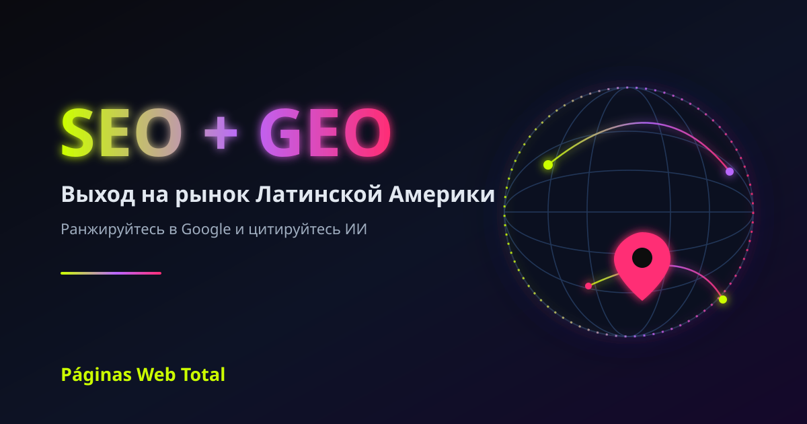

Как выйти на рынок Латинской Америки с помощью SEO и GEO
🔍 Бесплатно измерьте вашу видимость в ИИ (GEO)

Если ваша компания находится за пределами Латинской Америки и хочет там продавать, самый рентабельный путь — не платная реклама, а ранжирование в Google и упоминание вашего бренда искусственным интеллектом (ChatGPT, Gemini, Perplexity, Google AI Overviews) для латиноамериканских покупателей. Вот как это сделать и почему нужен локальный партнёр.
Почему Латинская Америка — это возможность сейчас
В Латинской Америке более 650 млн человек и один из самых быстрорастущих в мире уровней проникновения мобильного интернета и электронной коммерции, на двух доминирующих языках — испанском и бразильском португальском. Для иностранной компании с хорошим продуктом узкое место — не спрос, а локальная видимость.
Самая дорогая ошибка: переводить вместо локализации
Перевести сайт на испанский — это не выход на рынок. Каждая страна ищет по-разному, а бразильский португальский — фактически отдельный коммерческий язык. Настоящая локализация адаптирует ключевые слова, поисковые намерения, валюту и локальные сигналы, которые используют Google и ИИ.
SEO + GEO: доверие на новом рынке
Когда вы выходите в страну, где никто не знает ваш бренд, доверие — это всё. SEO выводит вас в Google региона; GEO заставляет ChatGPT, Gemini или Perplexity цитировать вас — мгновенная рекомендация.
Как продвинуть компанию за 4 шага
1. Локальная диагностика: как Google и ИИ видят вас сегодня.
2. Реальная локализация на испанский и бразильский португальский с корректным hreflang.
3. Авторитет и цитирование: локальные ссылки и контент, который ИИ может извлечь.
4. Измерение позиций, трафика и цитирований ИИ.
Почему локальный партнёр решает всё
Páginas Web Total более 14 лет ведёт проекты SEO и GEO в 15+ странах и 35+ отраслях, носители испанского и португальского, с подходом Data Science.
Как иностранной компании ранжироваться в Латинской Америке?
С локальным SEO (испанский и бразильский португальский, корректный hreflang, региональный авторитет) и GEO для цитирования в ChatGPT, Gemini и Google AI Overviews.
Достаточно ли перевести сайт на испанский?
Нет. Перевод — это не локализация. Каждая страна ищет по-разному, а бразильский португальский — отдельный рыночный язык.
Что такое GEO и почему это важно?
GEO оптимизирует ваш бренд, чтобы генеративный ИИ его цитировал. На рынке без репутации цитирование в ChatGPT или Gemini создаёт мгновенное доверие.